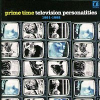

Television Personalities |
 1997 - Nectar - NTMCD563 - CD Songs: Magnificient Dreams Painting By Numbers David Hockney's Diaries If I Could Write Poetry A Day In Heaven 14th Floor King And Country The Boy In The Paisley Shirt Three Wishes Painter Man Makin' Time Someone To Share My Life With A Sense Of Belonging The Painted Word Happy All The Time Salvador Dali's Garden Party Goodnight Mr. Spaceman We Will Be Your Gurus
All songs written by Daniel Treacy and published by Twist and Shout music
except tracks 10 and 11 (K.Pickett/E.Phillips) published by Orbit Music. "What'cha mean, you've never heard of the Television Personalities! Listen mate if it hadn't a been for the TVP's and the Times, Supergrass and the Spice Girls wouldn't exist today, I'm tellin' ya, they invented the words POP, HYPE and GENIUS". Well, that's what my local cabbie says and he should know, he saw the Pistols at the 100 club, witnessed Dylan chucking that bottle out of the window in "Don't Look Back ", burnt his fingers burning money at the KLF tax dodge and spiked Dan Treacy's drink with acid at the Royal College of Art gig in 1980. But seriously, what can I say about the Television Personalities? That "How I Learnt To Love The Bomb" is one of my favourite singles of all the time, that Dan was (and if he so wished, could still be) one of the finest songwriters around, that he did much of his best work with Joe Foster and to a lesser extent lil' ol' me... In the last three weeks I have met three personal heroes who shaped and guided me through my formative years: At Stamford Bridge, home of Chelsea Football Club, I met Peter Osgood, valiant star of a cavalier team that epitomised everything a young boy growing up in London could wish for - genius and cool. At a "Prisoner" Appreciation Society convention I encountered actor Alexis Kanner whose performance as the young man in the last episode of TV star Patrick McGoohan's "The Prisoner" made me yearn for a Top Hat and pointy sideburns for many years. And finally, film star Malcom McDowell at a recent Lindsay Anderson Retrospective at the National Film Theatre. Mr. McDowell's debut starring role as Mick Travis in "If..." and as Alex De Large in "A Clockwork Orange" made infinite twists in my rebellious psyche. In "If..." he and his two pals all dressed in public school garb looked a stunning enough three piece to take on the Jam, while the boiler suited bowler hat wearing quartet of "A clockwork Orange" made them mercilious rivals to the mighty Beatles. Groups and gangs, posse's and bands, that's what it was all about me, and hearing my three heroes talking about the things they'd achieved got me thinking about some of the gangs I'd been in; Alan McGee's Creation Records in its most difficult, sexy, impossible years, Martin Carr's Boo Radleys when they had a Number One and Top Ten singles - and of course, the original Television Personalities. I'm a firm believer that social interaction skills in Britain are learnt in the playground and off the telly. We learn to survive as collectives of individuals brought together by the need over-come adversity - and impress the birds! And so it came to pass in 1975 - I had captained the school rugby team, was in the football team, represented the school in 100 and 1500 metres, my paintings were on the classroom walls, performed Kurt Weill musicals - then I learned to play the guitar and started to write songs. I started to search around for similar lost soul rebels at school. By this time we'd been streamed into various sets and I found the common denominators were John Bennett (we'd been to primary school together), Joseph Foster (a truly talented and genuinely funny man) and Daniel Treacy. It was the latter who was going to start the ball rolling. Dan's short stories and poems were great. I had an electric guitar with one pick-up and he had one with two, and an amplifier. Audaciously, one Friday afternoon I insisted on coming round for a jam. Equal to my audacity he invited me to his house the next morning at 9am - no later! Well, Saturday, 8.55am, I'm on his doorstep clutching my Telecaster copy. "I didn't really expect you to come" said Dan, ushering me in. The importance of partnerships is that one sees something in the other that he or she aspires to or respects. Dan was a good guitarist - very good in fact, but not in a Dave Gilmour licks sort of way. more like a Pete Townsend edginess that made my early John Lennon strumming style seem basic. But it worked well together. Armed with passion for early 70's Bowie, Roxy Music, Marc Bolan, the Byrds and Syd's Pink Floyd, we dumped football, got Saturday jobs and Dan, Joe, John, his brother Gerard and myself started buying band gear to practice. Those rehearsals were brilliant! The most fun I ever had, and they'd go for days Joe and Dan both bought reel-to-reel tape recorders and were doing weird things to them - then two things happened, Punk Rock, and Dan started writing. In 1976 we picked up on Dr. Feelgood, Eddie & the Hot Rods, and naturally the Pistols, and by the following year the British Sound had been crystallised The Clash, The Jam and The Buzzcocks. One evening round Dan's place I was treated to the first ever performance of "14th Floor". It sounded great - just him singing with the guitar. The next important step, he booked a recording studio and the rest is heresy. There were minor hits like "Part Time Punks", "Smashing Time", "I Know Were Syd Barrett Lives" and three albums that I collaborated on "And Don't The Kids Just Love It", "Mummy Your Not Watching Me" and "They Could Have Been Bigger Than The Beatles". Perhaps my favourite album of all is "Painted Word" a testament to Dan's song writing and Joe's capabilities as a producer. I stopped playing with the Television Personalities in 1981 to concentrate on fulfilling a few dreams of my own (25 albums to be exact and counting!). But nearly a decade later amid another music revolution, Acid House, Dan and myself plus a drummer who I'd never met and haven't since, played a set of early Television Personalities songs in a club in Bedford - and it sounded great! P.S. When the Clash reform in the near future to go on tour for a cool each, might I suggest a Television Personalities line-up of Dan, Joe, john and myself as the best possible support? No? Ah. Just a thought!
[Love, Edward Ball - from his home in Primrose Hill, April 1997] |